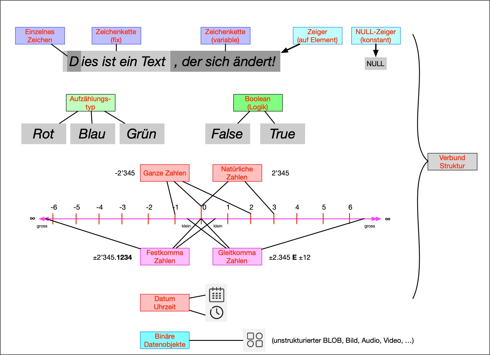

Grundlagen der Datenstrukturen und Datentypen
Schon in den 1950er-Jahren wurden erste Methoden entwickelt, um Daten effizient zu strukturieren und schnell darauf zuzugreifen. Mit der wachsenden Menge an Informationen stieg die Bedeutung klarer Strukturen, die Speicherplatz optimal nutzen und schnelle Zugriffe ermöglichen. Wie genau diese Strukturen aussehen, welche Formen von Daten sie speichern und welche Methoden es gibt, um sie effizient zu verwalten, das wird nun genauer betrachtet.
Was ist eine Datenstruktur?
In der Informatik bezeichnet man als Datenstruktur eine Methode, Daten so zu speichern und zu organisieren, dass sie effizient genutzt werden können. Dabei geht es nicht nur um die eigentlichen Daten, sondern auch um die Operationen, die auf ihnen ausgeführt werden, wie Einfügen, Löschen oder Suchen. Daten können unterschiedlich stark strukturiert sein: schwach strukturierte Daten wie freie Texte oder einfache Dokumente lassen sich nur schwer durchsuchen, während mässig strukturierte Daten wie Tabellen oder Listen bereits sortiert sind und sich einfacher auswerten lassen. Stark strukturierte Daten wie in Datenbanken bestehen aus vielen verknüpften Tabellen, in denen die Daten klar organisiert sind und komplexe Abfragen möglich machen. Neben strukturierten Daten gibt es unstrukturierte Daten, etwa Texte, Bilder oder Audioaufnahmen, die keine feste Ordnung haben. Grundsätzlich gilt: Je besser Daten organisiert sind, desto leichter lassen sie sich verarbeiten und analysieren, während die Strukturierung unstrukturierter Daten manchmal mit Informationsverlust verbunden sein kann.
Daten können diskret oder stetig sein. Diskrete Daten haben eine abzählbare Anzahl möglicher Werte. Stetige Daten hingegen sind nicht abzählbar. Ausserdem unterscheidet man Skalentypen: Bei der Nominalskala gibt es keine Rangordnung zwischen den Werten. Die Ordinalskala ordnet Werte in eine Reihenfolge. Bei der Kardinalskala sind die Werte geordnet und die Abstände zwischen ihnen interpretierbar. Ein weiterer wichtiger Aspekt ist die Häufbarkeit von Daten: Werte sind häufbar, wenn mehrere Antworten möglich sind und nicht häufbar, wenn nur eine Antwort erlaubt ist.
Datentypen
Datentypen legen fest, welche Art von Daten gespeichert werden kann und wie der Computer sie verarbeitet.
- Ganze Zahlen
- Natürliche Zahlen
- Dezimalzahlen
- Aufzählungstypen
- Boolean
- Zeichen
- Gleitkommazahlen
- (Null-) Zeiger
- Zeichenketten
- Datum und Uhrzeit
- Verbund
- Binäre Datenobjekte
Datenformate
Ein Datensatz ist eine kleine Sammlung von zusammengehörigen Daten. Zum Beispiel: Name, Telefonnummer und Adresse einer Person. Man kann sich das wie eine einzelne Zeile in einer Tabelle vorstellen. Viele Datensätze zusammen ergeben dann die ganze Tabelle.
Ein Array ist eine Datenstruktur, die eine feste Anzahl von Werten desselben Typs speichert. Alle Elemente liegen hintereinander im Speicher, sodass man direkt auf ein beliebiges Element zugreifen kann, indem man seine Position kennt.
Eine verkettete Liste funktioniert anders. Hier sind die Elemente nicht direkt nebeneinander gespeichert. Jedes Element enthält den Wert und einen Verweis auf das nächste Element in der Reihe. Dadurch kann man Elemente sehr einfach hinzufügen oder entfernen, ohne die gesamte Struktur verschieben zu müssen. Allerdings ist der Zugriff auf ein bestimmtes Element langsamer, weil man von Anfang an jedes Element der Reihe nach durchgehen muss, bis man das gewünschte erreicht. Verkettete Listen werden oft eingesetzt, wenn sich die Anzahl der Elemente häufig ändert oder wenn die Speichergrösse flexibel sein soll.
Eine weitere wichtige Struktur ist der Stack, auch Stapelspeicher genannt. Hier werden Elemente nach dem Prinzip „Last In, First Out“ (LIFO) gespeichert: Das zuletzt abgelegte Element wird zuerst wieder entnommen. Im Gegensatz dazu arbeitet die Queue, die Warteschlange, nach dem Prinzip „First In, First Out“ (FIFO): Das zuerst gespeicherte Element wird auch zuerst wieder entnommen. Eine Spezialform ist die Priority Queue, bei der Elemente nach Priorität statt nach Reihenfolge sortiert werden.
Graphen bestehen aus Punkten, die durch Linien miteinander verbunden sind. Jeder Punkt kann mehrere Verbindungen haben, nicht nur eine. Man kann sich das wie ein Strassennetz vorstellen: Die Orte sind die Punkte und die Strassen die Verbindungen. Graphen eignen sich, um Wege zu berechnen, Netzwerke darzustellen oder Beziehungen zwischen Objekten zu zeigen.
Ein Baum ist eine hierarchische Datenstruktur, bestehend aus Knoten. Jeder Knoten hat genau einen Elternknoten und kann mehrere Kindknoten besitzen. Ein Binärbaum ist ein spezieller Baum, bei dem jeder Knoten höchstens zwei Kinder hat. Bäume eignen sich besonders für schnelle Suche, Sortierung und strukturierte Speicherung von Daten.
Heaps sind Bäume, bei denen immer das wichtigste Element an der Spitze liegt.
Eine Hashtabelle speichert Werte ebenfalls in einer Reihe, aber nicht nach der Reihenfolge, in der sie hinzugefügt werden. Stattdessen wird jedem Wert ein Schlüssel zugeordnet. Dieser Schlüssel wird durch eine sogenannte Hash-Funktion in eine Speicherposition umgerechnet, sodass man den Wert sehr schnell finden kann, ohne die gesamte Struktur durchsuchen zu müssen. Hashtabellen eignen sich besonders gut, wenn man sehr grosse Datenmengen effizient durchsuchen will.
Fazit
Strukturen von Daten sind das Fundament jeder Software. Sie bestimmen, wie schnell und zuverlässig Informationen gespeichert und abgerufen werden können. Mit den richtigen Datenstrukturen lassen sich Daten effizient organisieren und sinnvoll nutzen.